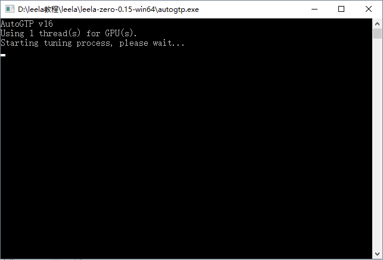
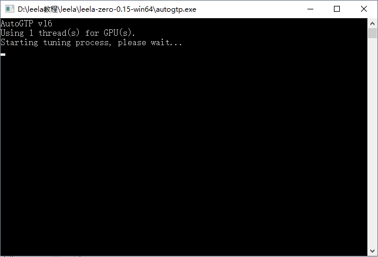

autogtp.exe自动训练程序使用教程
准备:
- 下载leela-zero最新版本
运行程序：
点击autogtp.exe运行训练程序。别搞错成leelaz.exe
自动下载权重文件中
程序运行到这个地方，会停顿比较久，在下载权重文件。因网络问题需要比较久的时间。

成功完成一局自对弈
一局自对弈结束后，会给出统计信息如下图.电脑配置不同，所需要的时间也不相同。
中断棋局
如果下棋到一半没下完想退出的话，输入q然后按回车键，程序就会保存当前进度，下次打开继续此对局。
点击autogtp.exe运行训练程序。别搞错成leelaz.exe
程序运行到这个地方，会停顿比较久，在下载权重文件。因网络问题需要比较久的时间。
一局自对弈结束后，会给出统计信息如下图.电脑配置不同，所需要的时间也不相同。
如果下棋到一半没下完想退出的话，输入q然后按回车键，程序就会保存当前进度，下次打开继续此对局。